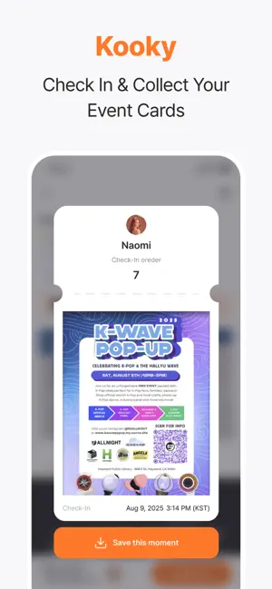
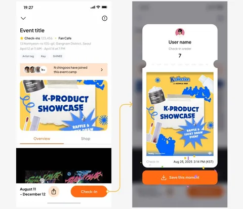

K-pop 新手入坑必备：用 kooky 找到同好、攒积分、投票偶像，一篇讲透
第一次接触 kooky？这篇从零带你走完下载注册、攒积分、参与线下活动签到、给本命投票的完整流程，不需要任何基础。
这篇能带你从完全不懂 kooky 到用起来——不需要任何 K-pop 基础，也不需要提前做功课。
它到底是干嘛的？一个生活化类比
想象一下：你粉了一个 K-pop 偶像，想知道他/她最近有什么回归活动、想去咖啡馆应援现场打卡、想给偶像的回归音源投一票、还想和其他同好聊聊——以前你得同时刷微博超话、看韩流资讯站、找线下活动地图，信息散得一塌糊涂。
kooky 就是把这三件事捏在了一起的一个 App。用更生活化的话说：它是粉丝版的「大众点评 + 微博超话 + 打投工具」三合一——找同好社区、看线下应援活动、攒积分给偶像投票，全在一个地方搞定。感兴趣的朋友可以先去kooky官网看看，首页上就有功能介绍和热门 fandom 展示。
Kooky 这个名字本身来自韩文词，本意是「喜欢」的意思。App 里的虚拟积分也叫 Kooky，你做的每一件事（签到、投票、点赞、看广告）都会变成 Kooky，而 Kooky 就是你给偶像投票的唯一货币——1 Kooky = 1 票。

五分钟上手：从下载到第一次跑通
好消息是，kooky 的上手路径非常短，跟着下面走，五分钟内你就能完成第一次投票。
第一步：下载安装包。iOS 用户直接去 App Store 搜 "kooky"；安卓用户如果应用商店里找不到，可以从官方下载拿。安装就是普通 App 的流程，点安装等几秒就行。
第二步：注册账号。打开 App 后有两个选择——手机号注册或者邮箱注册。国际用户推荐邮箱（Gmail、Outlook 都行），国内手机号也能直接收验证码。注册完设置昵称和头像就完事了，不用填太多资料。
第三步：关注你本命的 fandom 社区。这是最关键的一步——kooky 的内容是围绕 fandom 社区组织的，每个偶像（或者每个组合）都有自己的 fandom，比如 Stray Kids 的 fandom 叫 STAY，ENHYPEN 的叫 ENGENE。App 首页会有热门 fandom 推荐，或者直接在搜索栏打你偶像的名字。关注之后，这个 fandom 里所有同好发的帖子、线下应援活动、投票信息，都会出现在你的「My」动态流里。
第四步：攒第一笔 Kooky。注册完系统会送一笔启动资金，加上每天签到（50 Kooky）、给同好帖子点赞（每次 2 Kooky，上限 10 次 = 20 Kooky）、访问社区（7~14 Kooky），第一天就能攒 80~100 Kooky。
第五步：投出第一票。底部导航切到「Ranking」页面，找到当前在进行的投票主题，选你本命的艺人，点「Vote」按钮，输入要投的 Kooky 数量——搞定！
上手后先玩这三个功能
五分钟跑通之后，下面三个功能是新手最值得先碰的，每一个都会让你发现 kooky 比想象中好用得多。
功能一：线下应援活动签到
这是 kooky 最有特色的功能——它内置了一张事件地图，粉丝提交的咖啡馆应援、线下快闪、专辑义卖等活动都会标在上面。你打开地图就能看到你所在城市附近正在进行的应援活动。
到了活动现场，打开事件详情页里的签到按钮（只有 GPS 距离活动地点 10 米以内才会亮），点一下，+50 Kooky 立即到账，还会自动生成一张 Check-in Card 存在你的个人主页里——相当于你的应援打卡纪念。

这个功能的妙处在于：它把「线下应援」这个本来只有老粉才知道的事，变成了新人也能轻松参与、还有奖励的日常。哪怕你是第一次追线下，跟着地图走到咖啡馆、拍张照、签个到，就跟同好们有了共同话题。
功能二：Ranking 两阶段投票
kooky 的每次重大投票都分两步走——这是它和其他打投工具最大的不同：
- Ranking（海选阶段）：持续一周左右，每天有免费投票次数（5→10→15 次递增），票数 Top 4 的艺人会被提名进入决赛
- Main Vote（决赛阶段）：只有 1~3 天，所有投票次数限制取消，有多少 Kooky 就能投多少，决出最终胜者
这个设计的好处是：海选给足了粉丝攒 Kooky 的时间，决赛制造紧迫感让大家集中爆发。很多回归音源的主投票会在最后几小时甚至最后几分钟决出胜负，粉丝熬夜等结果是常事。
对于新手来说，刚注册的小账号也能参与——海选阶段每天的免费投票次数不看等级，人人都有。如果想知道 Main Vote 的倒计时规则、Loovy 怎么用这些进阶玩法，去kooky文档翻一翻就清楚了。
功能三：看广告攒 Kooky（每天 10 个上限）
如果你想快速攒 Kooky 但又不想花钱，看视频广告是最划算的方式。规则很简单：
| 广告次序 | 奖励 |
|---|---|
| 第 1 个 | 保底 50 Kooky |
| 第 2~10 个 | 5~15 Kooky（随机） |
| 特殊 | 约 1% 概率中 1000 Kooky Lucky Reward |
一天全看完约 140 Kooky，加上签到、点赞、社区访问等日常，每天能攒 230~290 Kooky。一个月下来 7000~9000 Kooky，基本覆盖日常 Ranking 投票所需。
⚠️ 注意两个限制：每 10 分钟内最多看 3 个，每天最多 10 个（KST 0:00 刷新）。而且是设备级限制——同一台手机就算换账号，每天还是只能看 10 个。
小白的三个常见疑问
这些问题在同好社区里被反复问到，提前知道能帮你少踩坑。
疑问一：签到按钮明明到了现场还是灰的？
签到有三重锁，必须同时满足：GPS 距离活动地点 ≤ 10 米、活动时间内、App 定位权限已开启。
到了现场按钮还是不亮的话，按这个顺序排查：先看活动时间对不对（很多应援活动只开周末的某个时段），再走到窗边或室外等 GPS 刷新 30 秒（室内、地下、高楼密集区 GPS 容易飘移），最后确认手机设置里 kooky 的定位权限开了。
疑问二：我屏蔽了一个人，怎么还能看到他发的帖子？
kooky 的屏蔽是单向的——你屏蔽了 A，你的动态里确实不会再出现 A 的帖子，A 也不能给你点赞评论。但是 A 还是能在搜索里看到你的帖子、进你的主页。kooky 团队的解释是：双向屏蔽容易被用来做信息茧房，单向屏蔽既保护了个人体验又不会完全切断社区连接。
疑问三：广告功能怎么突然消失了？
广告入口（Profile → Get Free Kooky）找不到的常见原因有三个：一是地区限制——部分国家/地区广告服务商不覆盖；二是App 版本太老——Android 早期版本广告功能确实延迟过，保持 App 更新就行；三是账号触发了反作弊——官方检测到异常行为（比如频繁切换账号看广告）会临时关闭广告权限。
如果不是以上情况但广告还是不能用，可以通过官方 Twitter 发 DM 反馈。
kooky 把「追偶像」这件事从「单打独斗搜信息」变成了「和同好一起攒积分、一起冲投票、一起打卡线下」的社区活动。上手不难，难的是坚持每天攒积分、在关键投票里不缺席。
如果你想更深入地了解 kooky 的完整功能，或者遇到其他问题不知道怎么排查——别担心，后面还有专门的疑问解答。
kooky 的官方资料目前在三个仓库都能拿到，方便不同网络环境的同好查阅：GitHub 主仓库、Gitee 镜像、GitCode 备份，内容同步更新，挑你访问最快的那个就行。